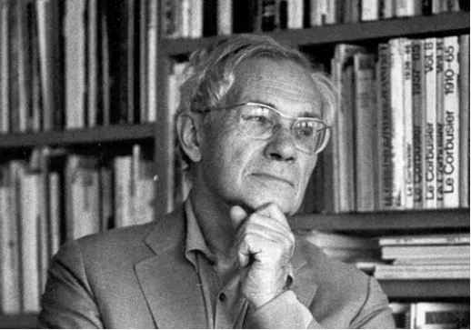
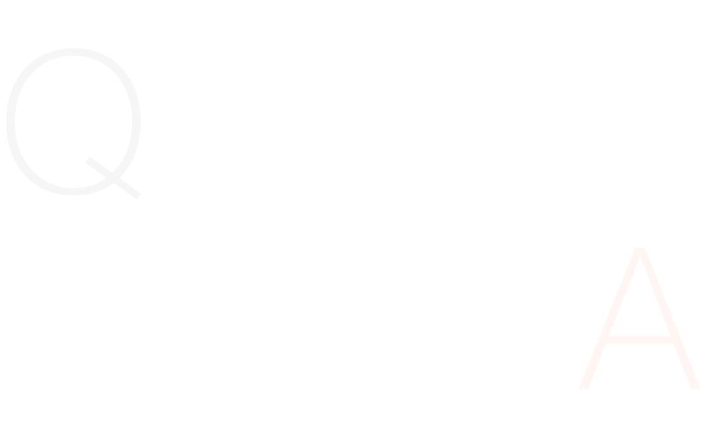
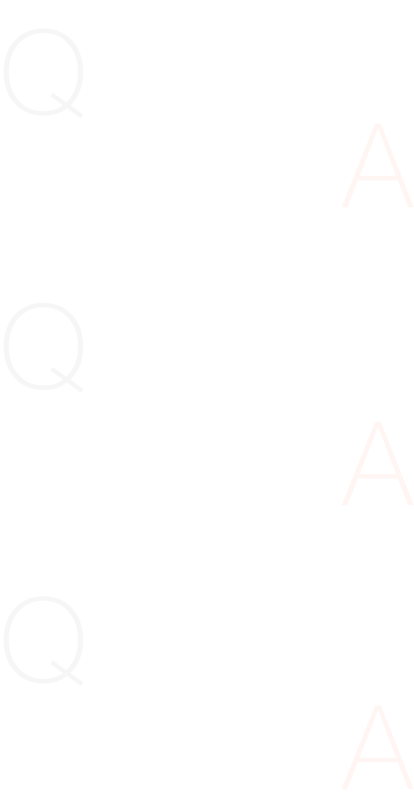
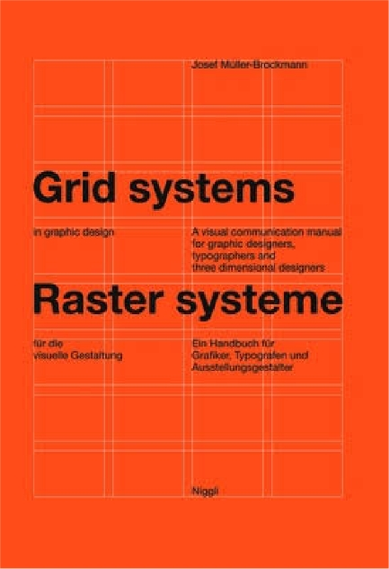
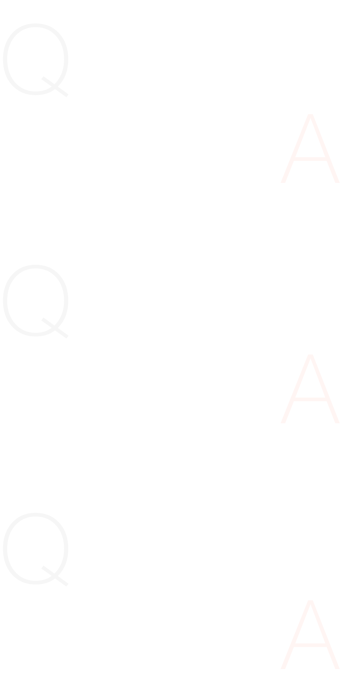

"젊은 사람들에게는 모든 것을 비판적으로 바라보길 권유한다. 그리고 언제나 자기 비평적으로 있을 것을 강력히 권유할 것이다."
‘I would advise young people to look
at everything they encounter in
a critical light. Then I wouldurge
them at all times to beself-critical.’
at everything they encounter in
a critical light. Then I wouldurge
them at all times to beself-critical.’
Yvonne Schwemer-Scheddin
Josef Müller-Brockmann

You are the protagonist of the Swiss School and stand for objective, radically minimalist geometric design. You invented the grid system for graphic design and were the first systematically to outline the history of visual communication. For Le Corbusier, order was the key to life. Georges Braque said, ‘I love the law that orders the creative.’ For Berthold Brecht, order covered up a deficit. What does order mean to you?
당신은 스위스 학교의 주인공이며 객관적이고 근본적으로 미니멀한 기하학적 디자인을 대표한다. 당신은 그래픽 디자인을 위한 그리드 시스템을 창안했으며 시각적 커뮤니케이션의 역사를 체계적으로 개괄한 최초의 사람이었다. 르코르뷔지에에게 질서는 삶의 열쇠였다. 조르주 브라크(Georges Braque)는 '나는 창작을 명령하는 법칙을 좋아한다'고 말했다. Berthold Brecht의 경우 명령으로 적자를 보상했다. 당신에게 질서는 어떤 의미인가?
Order was always wishful thinking for me. For 60 years I have produced disorder in files, correspondence and books. In my work, however, I have always aspired to a distinct arrangement of typographic and pictorial elements, the clear identification of priorities. The formal organisation of the surface by means of the grid, a knowledge of the rules that govern legibility (line length, word and letter spacing and so on) and the meaningful use of colour are among the tools a designer must master in order to complete his or her task in a rational and economic matter.
질서는 나에게 항상 희망사항이었다. 60년 동안 나는 파일, 서신, 책에 무질서를 만들어왔습니다. 그러나 내 작업에서 나는 항상 인쇄상의 요소와 그림 요소의 뚜렷한 배열, 우선순위의 명확한 식별을 열망해 왔습니다. 그리드를 통한 표면의 형식적인 구성, 가독성을 관리하는 규칙(줄 길이, 단어 및 문자 간격 등) 에 대한 지식, 의미 있는 색상 사용은 디자이너가 완성하기 위해 숙달해야 하는 도구 중 하나입니다. 합리적이고 경제적인 문제에 있어서 자신의 임무.
What do you regard as your best work?
The white reverse sides of my posters!

You were influenced by Carl Jung, but then lost interest. Why was that?
칼 융(Carl Jung)의 영향을 받았지만 흥미를 잃었습니다. 왜 그랬나요?
As a young man I was intrigued not only by psychology but also by graphology. When I met people who interested me I would read their handwriting and was rarely wrong in my judgements. But this gift began to disturb me, especially in my dealings with clients, where it would unnecessarily prejudice discussion. So I abandoned it overnight. Later I paid the price for giving up these analyses when I took on partners and employees whose handwriting would have given me an early warning of trouble ahead.
젊었을 때 나는 심리학뿐만 아니라 필적학에도 흥미를 느꼈습니다. 나에게 관심이 있는 사람들을 만났을 때 나는 그들의 손글씨를 읽었고 내 판단이 틀린 경우는 거의 없었습니다. 그러나 이 선물은 특히 고객과의 거래에서 불필요하게 토론에 편견을 줄 수 있어 나를 방해하기 시작했습니다. 그래서 밤새 버렸어요. 나중에 나는 손글씨로 앞으로의 문제에 대한 조기 경고를 제공했을 파트너와 직원을 맡게 되면서 이러한 분석을 포기한 대가를 치렀습니다.
What is the source of your efforts to clarify everything and aspire to what is eternally valid? Is it a protest against death, or a fear of looking behind the picture to the unconscious?
모든 것을 명확하게 하고 영원히 유효한 것을 열망하려는 노력의 원천은 무엇입니까? 그것은 죽음에 대한 항의인가, 아니면 그림 뒤의 무의식을 들여다보는 것에 대한 두려움인가?
The unconscious is part of the support structure: everything that is stored there comes to light in the work process. What I try to achieve in my work is to communicate
information about an idea, event or product as clearly as possible. Such a down-to-earth presentation is barely affected by present-day trends. But it is not so much a
question of making a statement that will be valid for all time as of being able to communicate information to the recipient in a way that leaves him or her free to form a
positive or negative opinion.
information about an idea, event or product as clearly as possible. Such a down-to-earth presentation is barely affected by present-day trends. But it is not so much a
question of making a statement that will be valid for all time as of being able to communicate information to the recipient in a way that leaves him or her free to form a
positive or negative opinion.
무의식은 지원 구조의 일부입니다. 거기에 저장된 모든 것은 작업 과정에서 밝혀집니다. 제가 작업을 통해 달성하고자 하는 것은 아이디어, 이벤트, 제품에 대한
정보를 최대한 명확하게 전달하는 것입니다. 이러한 현실적인 프레젠테이션은 오늘날의 추세에 거의 영향을 받지 않습니다. 그러나 항상 유효한 진술을 하는 것
이 아니라 받는 사람이 자유롭게 긍정적이거나 부정적인 의견을 형성할 수 있는 방식으로 정보를 전달할 수 있는지의 문제입니다.
정보를 최대한 명확하게 전달하는 것입니다. 이러한 현실적인 프레젠테이션은 오늘날의 추세에 거의 영향을 받지 않습니다. 그러나 항상 유효한 진술을 하는 것
이 아니라 받는 사람이 자유롭게 긍정적이거나 부정적인 의견을 형성할 수 있는 방식으로 정보를 전달할 수 있는지의 문제입니다.
You work to quite a definite rational model, though life for the most part unfolds intuitively.
인생은 대부분 직관적으로 전개되지만, 당신은 매우 명확하고 합리적인 모델을 사용하고 있습니다.
But the model is always individual. Had you asked me 40 years ago, I would have been more confident in my defence of the rules than I am today. I have changed. Personality is defined in two ways: what is inherited and what is consciously assimilated. In my case, reading has broadened my knowledge, and my intuition, inspiration and emotions stem from what I have taken in. But rules are important. Laws enable multitudes of people to live together – no nation can exist without laws. They favour the freedom of the many at the expense of the individual.
하지만 모델은 항상 개인입니다. 40년 전에 저에게 물으셨다면 저는 지금보다 규칙을 지키는 데 더 자신감을 가졌을 것입니다. 나는 변했어. 성격은 유전되는 것 과 의식적으로 동화되는 것, 두 가지 방식으로 정의됩니다. 내 경우에는 독서를 통해 지식이 넓어졌고, 내가 배운 것에서 직관, 영감, 감정이 생겨났습니다. 하지만 규칙은 중요합니다. 법은 수많은 사람들이 함께 살 수 있게 해줍니다. 법 없이는 어떤 나라도 존재할 수 없습니다. 그들은 개인을 희생시키면서 다수의 자유를 선호합니다.

요제프 뮐러 브로크만의 저서 Grid Systems

Why is the measurable, the demonstrable, so fascinating?
측정 가능하고 입증 가능한 것이 왜 그렇게 매력적인가요?
The greatest works of art impress through their balance, their harmony, their proportions, all of which can be measured. That is one of the reasons why paintings, sculptures and buildings that are thousands of years old – by the Egyptians, Chinese, Assyrians and so on – are still fascinating to us today. Mondrian, on the other hand, did not use measurements and therefore took a long time to do a painting. However, few artists possess as uch intelligence, sensibility and intuition as Mondrian.
가장 위대한 예술 작품은 균형, 조화, 비율을 통해 깊은 인상을 남깁니다. 이 모든 것은 측정할 수 있습니다. 이것이 이집트인, 중국인, 아시리아인 등이 만든 수천년 된 그림, 조각품, 건물이 오늘날에도 여전히 우리에게 매력적인 이유 중 하나입니다. 반면 몬드리안은 치수를 사용하지 않았기 때문에 그림을 그리는 데 오랜 시간이 걸렸습니다. 그러나 몬드리안만큼 많은 지성, 감성, 직관을 지닌 예술가는 거의 없습니다.
So did you trust to intuition in your illustrative period?
그럼 당신은 그림을 그리던 시절 직관을 믿었나요?
Yes, because I wanted to explore the limits of my artistic ability. Until I was 30 I had been trying out various styles and techniques to find out where my talent might lie. I had quite a lot of apparent success with my illustrative work, but as a result of my ruthless self-critical analysis I saw that I possessed no essential artistic talent beyond the ordinary, and the creativity of a mediocre person is of no general interest. You can’t learn to become an artist, but you can learn to become a useful graphic artist. Intensive study of typography will reveal its laws, and the same holds for photography and compositions using typographical, photographic and graphic elements.
네, 제 예술적 능력의 한계를 탐구하고 싶었거든요. 나는 30세가 될 때까지 내 재능이 어디에 있는지 알아보기 위해 다양한 스타일과 기술을 시도해 왔습니다. 나는 일러스트 작업으로 상당한 성공을 거두었지만 냉혹한 자기 비판적 분석의 결과 나에게는 평범함을 넘어서는 본질적인 예술적 재능이 없으며 평범한 사람의 창의성은 일반적 관심이 없다는 것을 알게 되었습니다. 예술가가 되는 법을 배울 수는 없지만 유용한 그래픽 아티스트가 되는 법은 배울 수 있습니다. 타이포그래피에 대한 집중적인 연구는 그 법칙을 드러낼 것이며, 타이포그래피, 사진 및 그래픽 요소를 사용하는 사진과 구성에도 마찬가지입니다.
So you opted for clear-sighted reason, for reducing things to their essentials – to serve a democratic purpose?
민주적 목적을 달성하기 위해 사물을 핵심으로 축소하는 명확한 이유를 선택하셨나요?
I have always known that my illustrations, drawings and paintings are entertainment. They were quite good, but harmless. I was also successful in using a mix of surrealistic illustration and factual information in exhibition designs in the 1940s and 1950s, but the lack of objectivity disturbed me. So for the ‘Landi 1964’ [the Swiss regional exhibition], I eschewed all playfulness and subjectivity and arrived at an objective typographic-pictorial solution.
I had to teach myself how to lookcritically at my work and makedistinctions between what iscreative, imitative or merelyintellectually calculating. Afterfour worthless years of war Iwanted to have a positive,constructive role in society. Icouldn’t improve textual-pictorialcommunication through my artisticwork but I could do so throughrational-objective typography andfunctional, unmanipulativephotography. No one can exceed hisor her limitations. Any time Itried I failed. My limitationsare closely circumscribed – Ihave not come far – but I havekept my sense of humour because Ihave accepted them. Switzerland isa country of the norm. Geniusflees this landscape, thisZurich Gemütlichkeit, the cultureof the farmer and the burgher. Itis no accident that geniuses suchas Le Corbusier, Arthur Honeggeror the bridge-builder Othmar H.Ammann first found recognitionabroad.
I had to teach myself how to lookcritically at my work and makedistinctions between what iscreative, imitative or merelyintellectually calculating. Afterfour worthless years of war Iwanted to have a positive,constructive role in society. Icouldn’t improve textual-pictorialcommunication through my artisticwork but I could do so throughrational-objective typography andfunctional, unmanipulativephotography. No one can exceed hisor her limitations. Any time Itried I failed. My limitationsare closely circumscribed – Ihave not come far – but I havekept my sense of humour because Ihave accepted them. Switzerland isa country of the norm. Geniusflees this landscape, thisZurich Gemütlichkeit, the cultureof the farmer and the burgher. Itis no accident that geniuses suchas Le Corbusier, Arthur Honeggeror the bridge-builder Othmar H.Ammann first found recognitionabroad.
저는 제 삽화, 그림, 그림이 오락이라는 것을 항상 알고 있었습니다. 그것들은 꽤 좋았지만 무해했습니다. 나는 또한 1940년대와 1950년대 전시 디자인에 초현실적인 일러스트레이션과 사실적 정보를 혼합하여 사용하는 데 성공했지만 객관성이 부족하여 불안했습니다. 그래서 'Landi 1964'(스위스 지역 전시회)를 위해 나는 모든 장난기와 주관성을 피하고 객관적인 타이포그래피-그림 솔루션에 도달했습니다.
나는 내 작업을 비판적으로 보는방법을스스로 배워야 했고, 창의적인것과모방적인 것, 아니면 단순히지적으로계산적인 것을 구별해야했습니다.4년간의 쓸데없는 전쟁끝에 나는사회에서 긍정적이고건설적인 역할을맡고 싶었습니다.나는 예술 작품을통해 텍스트와그림의 의사소통을향상시킬 수없었지만 합리적이고객관적인타이포그래피와 기능적이고조작이불가능한 사진을 통해 그렇게 할수있었습니다. 누구도 자신의한계를뛰어넘을 수 없습니다.나는시도할 때마다 실패했다. 내한계는밀접하게 제한되어 있습니다.나는멀리 오지 않았습니다. 그러나나는그것을 받아들였기 때문에 유머감각을유지했습니다. 스위스 는표준의나라입니다. 천재는 이 풍경,이취리히 보석 ü tlichkeit ,농부와시민의 문화를 탈출합니다.르코르뷔지에(Le Corbusier),아서오네거(Arthur Honegger)또는교량 건설자 오스마르 H. 암(OthmarH. Ammann)과 같은 천재들이처음으로해외에서 인정을 받은 것은우연이아닙니다.
나는 내 작업을 비판적으로 보는방법을스스로 배워야 했고, 창의적인것과모방적인 것, 아니면 단순히지적으로계산적인 것을 구별해야했습니다.4년간의 쓸데없는 전쟁끝에 나는사회에서 긍정적이고건설적인 역할을맡고 싶었습니다.나는 예술 작품을통해 텍스트와그림의 의사소통을향상시킬 수없었지만 합리적이고객관적인타이포그래피와 기능적이고조작이불가능한 사진을 통해 그렇게 할수있었습니다. 누구도 자신의한계를뛰어넘을 수 없습니다.나는시도할 때마다 실패했다. 내한계는밀접하게 제한되어 있습니다.나는멀리 오지 않았습니다. 그러나나는그것을 받아들였기 때문에 유머감각을유지했습니다. 스위스 는표준의나라입니다. 천재는 이 풍경,이취리히 보석 ü tlichkeit ,농부와시민의 문화를 탈출합니다.르코르뷔지에(Le Corbusier),아서오네거(Arthur Honegger)또는교량 건설자 오스마르 H. 암(OthmarH. Ammann)과 같은 천재들이처음으로해외에서 인정을 받은 것은우연이아닙니다.